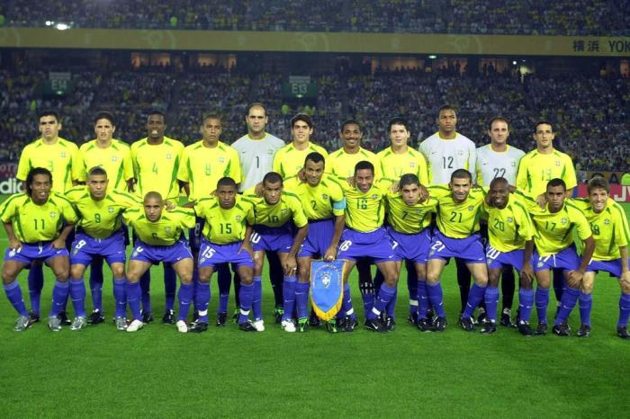

Servidor do HEXA
TODO MUNDO TENTA, MAS SO O BRASIL E PENTA.
HISTORIA DO BRASIL EM COPAS DO MUNDO
E a selecao mais bem-sucedida da historia do futebol mundial, sendo a recordista em conquistas em Copas do Mundo, com cinco titulos invictos:
- 1958
- 1962
- 1970
- 1970
- 1994
- 2002
TIME PENTACAMPEAO
O Brasil e unica selecao que venceu a Copa do Mundo em tres continentes distintos, na area de quatro confederacoes continentais de futebol (Europa, Americas, do Norte/CONCACAF e do Sul/CONMEBOL, e Asia), e a ter jogado todas as edicoes do torneio, feito que ostenta desde 1950, sendo junto com a Selecao Japonesa as unicas que se classificaram para todas as edicoes posteriores a sua edicao de estreia (japoneses se classificaram pela primeira vez em 1998, 15 edicoes depois da de 1930, disputando todas as seguintes.
Mais um motivo de orgulho para os torcedores brasileiros com nossa trajetoria pelas Copas do Mundo da FIFA entre os 4 maiores artilheiros de todas as Copas, temos 2 brasileiros: o primeiro lugar e ocupado pelo fenomeno Ronaldo, com 15 gols em todas as edicoes que participou, e o insubstituivel Rei Pele, com 12 gols.
Desde o titulo do Pentacampeonato, em 2002, no Japao, ate a edicao de 2014, no Brasil, a selecao brasileira viveu mais momentos de baixos do que de altos. As performances nas Copas de 2006 e 2010 nao atenderam as expectativas e, em 2014, ficou evidente a frustracaoo geral da nacao com a derrota por 7X1 para a Alemanha.
{kind=link}